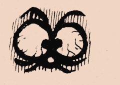
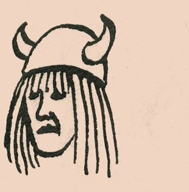

Deux saxophones, une basse défrettée et des percussions hétéroclites : un son rugueux, lyrique, qui se consume dans une danse aveugle*.
* Port du casque recommandé.




Deux saxophones, une basse défrettée et des percussions hétéroclites : un son rugueux, lyrique, qui se consume dans une danse aveugle*.
* Port du casque recommandé.
Burnin' Chamber Music (!) est une œuvre en deux parties pour saxophone alto, saxophone baryton, basse défrettée et percussions hétéroclites. Un son rugueux, heurté et lyrique. L'écriture est formelle, tendue, et laisse des espaces où l'improvisation va se précipiter.
Comodoro Süleyman est musicien, compositeur et dessinateur. Il développe une activité de bassiste et improvisateur, de la chanson française à la cumbia colombienne. Il a joué avec Margriet et John Tchicai, Raul de Souza, Daniel Garbin, Jackson Scott Walter, Bombes 2 bal et La Macchina Volante. Il collabore également comme graphiste avec Los Gusanos (Bristol, Ninja Tune).